Thresh Product OS is a Claude plugin that turns Claude into an agentic product management operating system. Once installed, Claude gains 15 specialized skills, 17 commands, and 7 autonomous agents that cover the full PM lifecycle—from customer research through story writing to Jira publishing.
Thresh is not a separate application. It works inside Claude—either in Cowork (the desktop app) or Claude Code (the CLI). You talk to Claude normally, and Thresh skills activate automatically based on what you ask for. You can also invoke commands directly with slash syntax like /thresh-briefing.
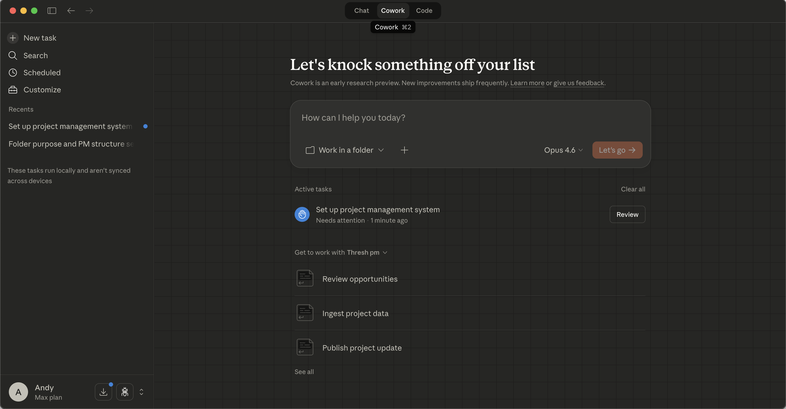
Thresh is distributed as a Claude plugin hosted on GitHub. There are two ways to install it.
This is the recommended path for anyone using the Claude desktop app.
andytranh-ax/thresh-pm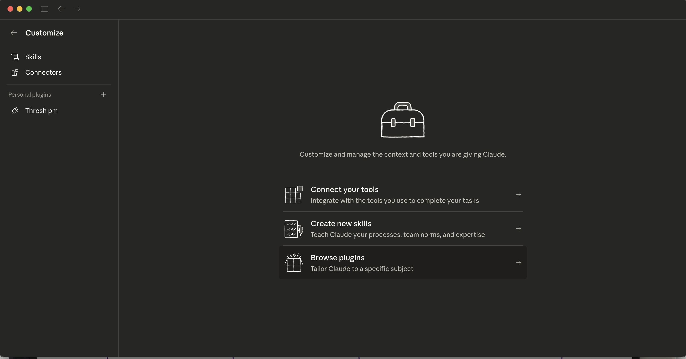
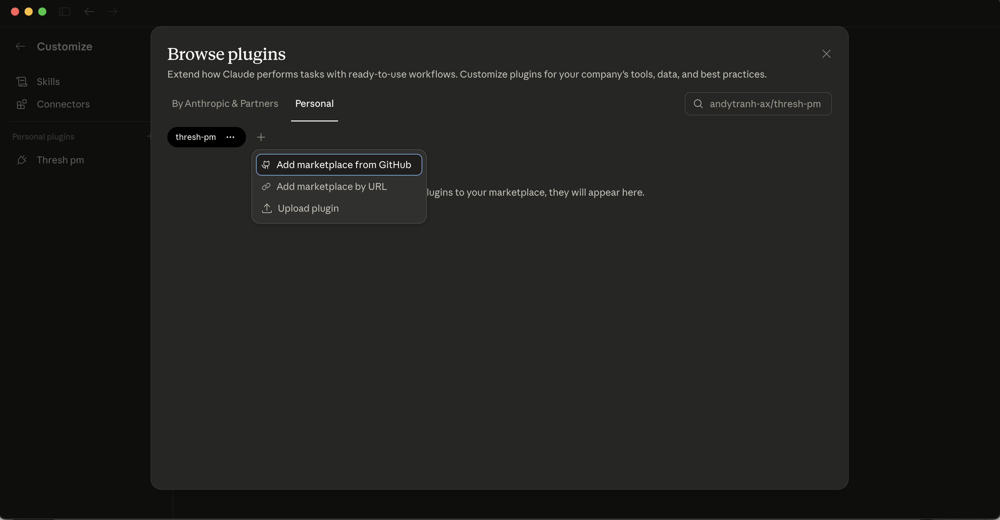
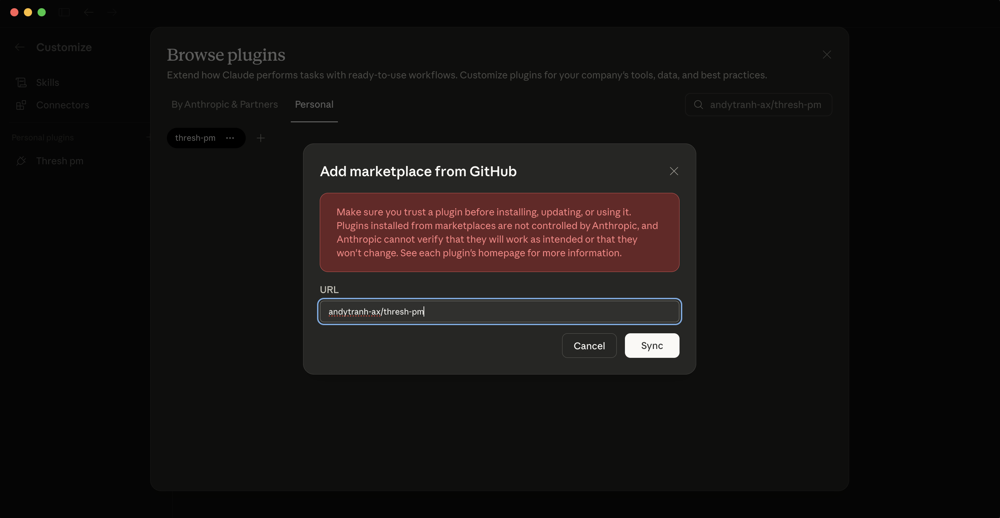
andytranh-ax/thresh-pm and click Sync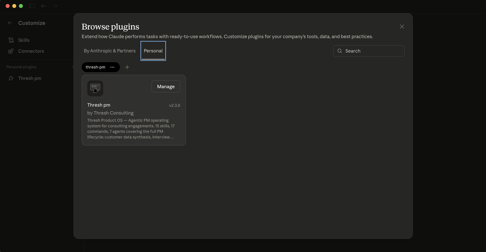
If you use Claude Code (terminal), run these two commands:
claude plugin marketplace add andytranh-ax/thresh-pm
claude plugin install thresh-pm@thresh-pmPlugins installed via CLI are also available in Cowork, and vice versa. You only need to install once.
After installing, open Cowork’s Customize panel. You should see Thresh PM listed under your Personal plugins with 17 commands, 15 skills, and 7 agents.
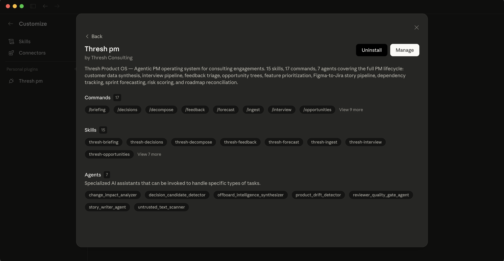
If skills don’t appear immediately, fully quit and reopen the Claude desktop app. Plugins load at startup.
Every client engagement gets its own folder. The /thresh-setup command walks you through creating everything you need in one conversation.
Open Cowork, select a folder for your engagement (or create a new one), and type /thresh-setup. Claude will guide you through six phases:
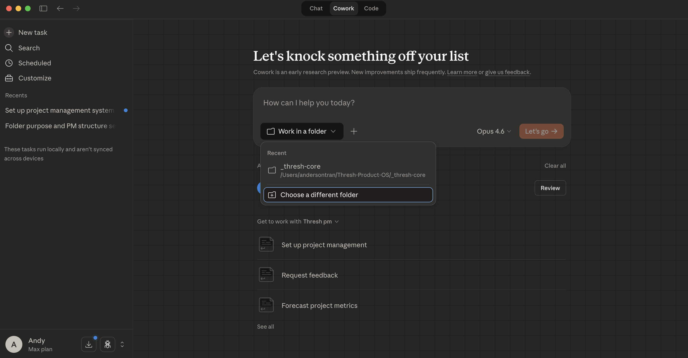
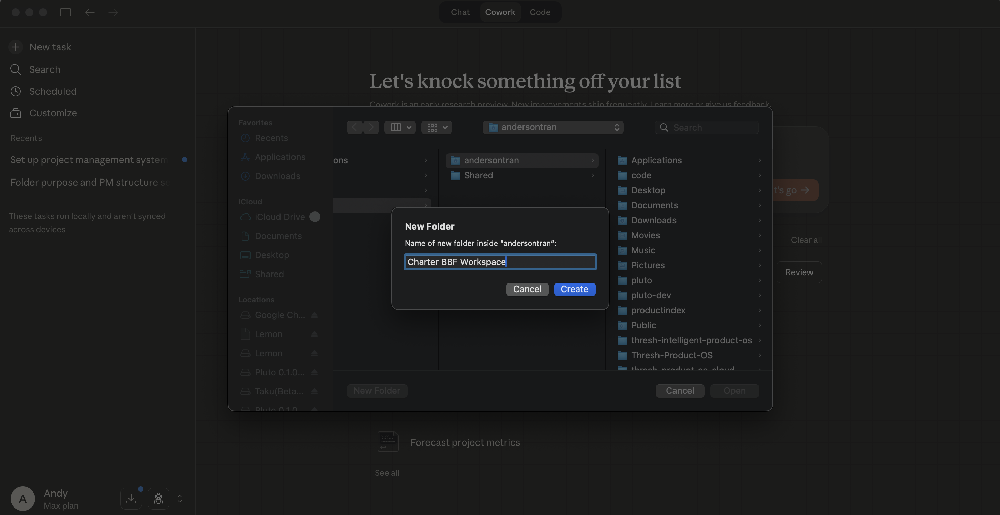
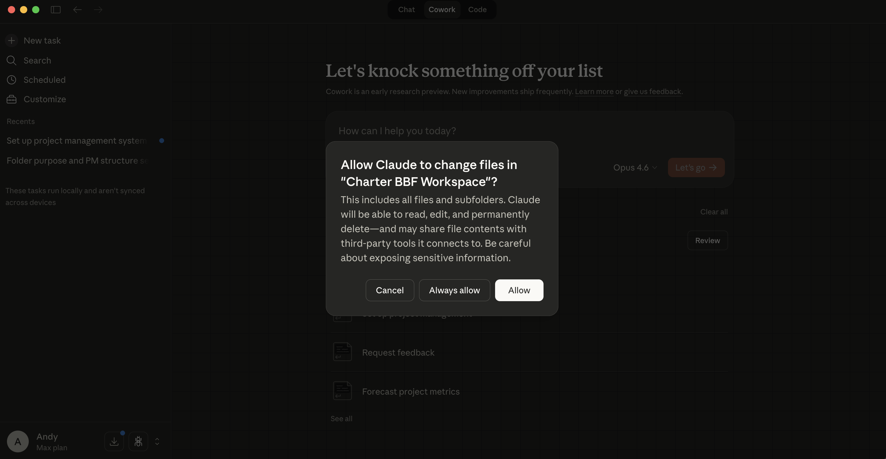
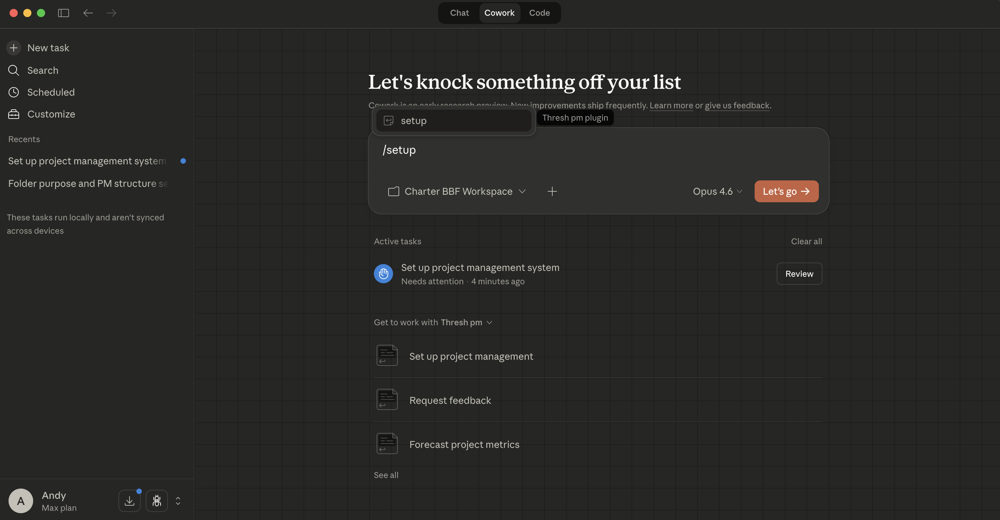
/setup — Claude autocompletes to /thresh-pm:setup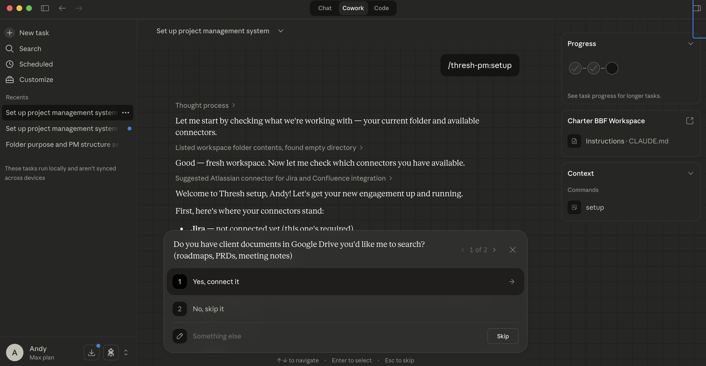
Claude checks which integrations you have connected and helps you set up any that are missing.
| Connector | Required? | What It Enables |
|---|---|---|
| Jira (Atlassian) | Required | Ingesting backlog, publishing stories, sprint tracking, velocity metrics |
| Google Drive | Recommended | Searching client docs, PRDs, meeting notes, roadmaps |
| Figma | Optional | Design decomposition, Figma-to-story pipeline |
| Slack | Optional | Pulling context from conversations, feedback channels |
If a connector isn’t available, Claude will tell you exactly where to enable it in Cowork’s Customize panel.
Claude asks a few questions conversationally: client name, engagement name, Jira project key(s). It then auto-detects your Jira configuration—cloud ID, instance URL, custom fields, workflow statuses, and issue types—so you don’t have to configure anything manually.
Claude creates the full engagement directory structure in your selected folder, including context files, data templates, rule files, and memory scaffolding. Everything is pre-populated with the correct engagement details.
This is where the engagement becomes useful from day one. Claude asks you to share whatever you already know—glossary terms, stakeholders, product context, technical landscape, existing designs, and customer research. You can paste text, upload files, or point to Google Drive docs. Claude processes each input into the right structured files.
Skip anything you don’t have yet. You can always fill gaps later.
Claude offers to pull your current Jira state immediately. For small projects it runs a full import; for large backlogs it offers a choice between full import and active-only (current sprint + last 90 days).
Claude summarizes everything that was created, which connectors are active, what context was seeded, and suggests next steps.
Thresh extends Claude with PM-specific capabilities. You don’t need to memorize commands or follow a specific workflow. Just talk to Claude about what you need, and the right skills activate automatically.
Skills are the underlying capabilities—Claude invokes them based on context. If you say “can you break down this Figma screen into stories?”, Claude activates the decompose skill without you needing to type a command.
Commands are shortcuts that explicitly invoke a skill. Typing /thresh-decompose does the same thing as asking Claude to decompose a design, but it’s faster if you already know what you want.
Agents are autonomous multi-step workflows that chain multiple skills together. For example, the story_writer_agent writes stories using quality gates, templates, and dependency checks without you orchestrating each step.
All engagement data lives in your selected folder. Key files:
| File | Purpose |
|---|---|
CLAUDE.md | Engagement configuration—Claude reads this at the start of every session |
jira_config.json | Jira connection details, custom fields, workflow statuses |
product/work_graph.json | All stories, epics, and dependencies in structured format |
product/context/ | Glossary, stakeholders, technical atlas, UI registry, discovery summary |
product/customer_data/ | Raw and processed customer research data |
product/metrics/ | Velocity, team profiles, estimation accuracy |
.claude/rules/ | Story writing, Jira conventions, quality gates, context routing rules |
You don’t need to edit these files directly. Thresh skills read from and write to them automatically as you work.
All 17 commands, organized by workflow phase. Each can be invoked by typing it in the chat, or Claude will suggest it when relevant.
| Command | What It Does |
|---|---|
| /thresh-setup | Full guided setup for a new engagement. Handles connectors, folder structure, context seeding, Jira auto-detection, and first data pull. |
| /thresh-ingest | Pulls data from Jira, Figma, Google Drive into local JSON files. Smart about re-runs—only pulls new or changed data after the first sync. |
| Command | What It Does |
|---|---|
| /thresh-briefing | Morning intelligence report: sprint health, overnight changes, defect radar, PR stalls, and recommended focus areas. |
| /thresh-decisions | Scans Jira comments and status changes for informal decisions that should be formally captured in the decision log. |
| /thresh-risk | Scores each story in the current sprint across 4 risk dimensions and flags high-risk items for attention. |
| /thresh-forecast | Predicts sprint completion probability using historical velocity, current work graph state, and team capacity. |
| Command | What It Does |
|---|---|
| /thresh-interview | Prepares structured interview scripts or processes interview transcripts into structured data for synthesis. |
| /thresh-feedback | Bulk triage of feature requests and feedback from multiple channels. Categorizes, deduplicates, scores, and routes into synthesis. |
| /thresh-synthesize | Ingests mass customer data (interviews, surveys, tickets, NPS) and synthesizes into pain points, themes, and feature candidates. |
| Command | What It Does |
|---|---|
| /thresh-opportunities | Builds an Opportunity Solution Tree (Teresa Torres framework) from synthesis data. Maps outcomes to opportunities to solutions to experiments. |
| /thresh-prioritize | Prioritizes features using customer evidence, dependency data, capacity constraints, and multiple frameworks (RICE, weighted scoring, etc.). |
| /thresh-reconcile | Reconciles product roadmap against current Jira backlog. Identifies gaps, duplicates, orphaned work, and misalignment. |
| Command | What It Does |
|---|---|
| /thresh-decompose | Transforms Figma designs into a fully linked epic/story structure. Analyzes screens, identifies components, wires dependencies, and can publish directly to Jira. |
| /thresh-refine | Facilitates structured refinement sessions with prep, interactive story walkthrough, and post-refinement Jira sync. |
| /thresh-publish | Publishes stories from the work graph to Jira with full content fidelity, dependency linking, and epic hierarchy. |
| /thresh-publish-to-jira | Validates dependency mappings before syncing with Jira. Use when you want an extra validation pass before publishing. |
| Command | What It Does |
|---|---|
| /thresh-team-health | Analyzes completed work by developer to build expertise profiles, spot capacity issues, and recommend story assignments. |
Skills are what Claude uses behind the scenes. Each has deep domain knowledge and specific procedures. You rarely need to think about skills directly—Claude picks the right one based on your request.
| Skill | Capability |
|---|---|
| thresh-briefing | Generates comprehensive sprint health reports from Jira data |
| thresh-decisions | Decision mining from Jira comment threads and status transitions |
| thresh-decompose | Figma-to-story pipeline with component analysis and dependency wiring |
| thresh-feedback | Multi-channel feedback triage with dedup and scoring |
| thresh-forecast | Sprint completion probability using velocity and work graph data |
| thresh-ingest | Multi-source data ingestion with delta detection |
| thresh-interview | Interview script generation and transcript processing |
| thresh-opportunities | Opportunity Solution Tree construction (Teresa Torres method) |
| thresh-prioritize | Evidence-based feature prioritization with multiple frameworks |
| thresh-publish | Jira issue creation with dependency linking and epic hierarchy |
| thresh-reconcile | Roadmap-to-backlog reconciliation and gap analysis |
| thresh-refine | Structured refinement session facilitation |
| thresh-risk | Multi-dimensional risk scoring for sprint stories |
| thresh-synthesize | Customer data synthesis into structured pain points and themes |
| thresh-team-health | Developer expertise profiling and assignment recommendations |
Agents are autonomous workflows that chain multiple skills and quality checks. They run multi-step tasks without you needing to orchestrate each step.
| Agent | What It Does |
|---|---|
| story_writer_agent | Writes stories with acceptance criteria, applies quality gates, checks dependencies, and validates against existing patterns. |
| reviewer_quality_gate_agent | Reviews stories against quality standards. Catches missing acceptance criteria, vague descriptions, and dependency gaps. |
| change_impact_analyzer | Analyzes a proposed change and maps its impact across the work graph—which stories are affected, which teams need to know. |
| decision_candidate_detector | Monitors Jira activity and surfaces decisions that were made informally but should be formally logged. |
| product_drift_detector | Compares current sprint work against the stated roadmap and flags drift—are we building what we said we would? |
| offboard_intelligence_synthesizer | When wrapping up an engagement, synthesizes all accumulated context into handoff documentation. |
| untrusted_text_scanner | Security scanner that checks user-provided text for prompt injection attempts before processing. |
You don’t need to follow rigid steps. These are patterns that work well, but Claude adapts to however you prefer to work.
Open your engagement folder in Cowork and ask for a briefing. Claude pulls the latest Jira state and gives you sprint health, overnight changes, defect status, and recommendations for where to focus.
Try: “What’s the status of the sprint?” or just /thresh-briefing
Drop interview transcripts, survey exports, support ticket CSVs, or feedback dumps into your engagement’s customer_data/raw/ folder. Then ask Claude to process them. It will triage, categorize, and synthesize the data into structured pain points and opportunities.
Try: “I just added 5 interview transcripts. Can you synthesize them?”
Share a Figma link or upload screenshots. Claude analyzes the designs, identifies UI components and user flows, generates stories with acceptance criteria, maps dependencies, and can publish the entire epic/story structure to Jira in one pass.
Try: “Break down this Figma screen into stories” and paste a Figma URL
Before a refinement session, ask Claude to prep the stories. It reviews acceptance criteria, flags gaps, checks dependencies, and generates a structured walkthrough you can use in the meeting. After refinement, it syncs any changes back to Jira.
Try: “Prep the stories in the current sprint for refinement”
When stories are ready, Claude publishes them to Jira with full content—acceptance criteria, story points, dependency links, epic assignments, and any labels or components. It validates everything before pushing.
Try: “Publish the stories we just wrote to Jira”
The plugin is installed once globally. Each engagement gets its own folder with its own CLAUDE.md, Jira config, and context files. To switch between engagements, just open a different folder in Cowork.
/thresh-setup in each. Each gets its own Jira project key, its own context, and its own work graph. Claude keeps them completely separate.
Thresh includes 5 rule files that automatically guide Claude’s behavior during your engagement. These are copied into your .claude/rules/ folder during setup.
| Rule File | What It Enforces |
|---|---|
| story-writing.md | Story format standards: user story syntax, acceptance criteria requirements, point estimation conventions |
| jira-conventions.md | Jira field usage: which fields to populate, labeling patterns, component assignment, sprint naming |
| quality-gates.md | Pre-publish checks: stories must have AC, dependencies must be mapped, Figma links required for UI stories |
| context-routing.md | Which context files to consult for which tasks—ensures Claude uses the right data sources |
| client-overrides.md | Placeholder for client-specific customizations: naming conventions, workflow adjustments, terminology |
You can edit these files to customize Claude’s behavior for specific clients or teams.
Thresh uses 11 JSON schemas to maintain data consistency across all skills. You don’t need to know these in detail—they work behind the scenes—but they ensure that data produced by one skill is readable by every other skill.
| Schema | Validates |
|---|---|
| work_graph.schema.json | Stories, epics, dependencies, and their relationships |
| synthesis.schema.json | Customer pain points, themes, and evidence chains |
| velocity.schema.json | Sprint velocity data and trend calculations |
| team_profiles.schema.json | Developer expertise maps and workload data |
| jira_config.schema.json | Jira connection and field configuration |
| opportunity_tree.schema.json | Opportunity Solution Tree structure |
| prioritization.schema.json | Feature priority rankings and scoring criteria |
| feedback_triage.schema.json | Feedback categorization and routing |
| reconciliation.schema.json | Roadmap-to-backlog comparison results |
| ui_registry.schema.json | UI component inventory and Figma references |
| ingest_state.schema.json | Data sync state and delta tracking |
Playbooks are pre-built multi-step procedures that Claude follows for common PM workflows. They combine multiple skills in a tested sequence.
| Playbook | Workflow |
|---|---|
| Daily Figma-to-Story | Figma link → component analysis → story writing → dependency mapping → Jira publish |
| Story Reasoning | Context loading → story drafting → quality gate check → revision → finalization |
| Jira Publish Stories | Work graph validation → dependency check → Jira field mapping → batch publish |
| Intelligence Loop Quickstart | Ingest → briefing → decision scan → risk score → action items |
| UX-to-Story Translation | Design analysis → interaction mapping → edge cases → AC generation |
| Milestone Decomposition | Milestone definition → phase breakdown → epic creation → story writing → dependency wiring |
| Risk Regression | Historical risk data → pattern detection → recurring risk identification → mitigation suggestions |
| After-Sync Decision Candidates | Post-ingest scan → comment analysis → decision extraction → log update |
| Offboarding Synthesis | Context files → decision log → work graph → lessons learned → handoff document |
Fully quit and reopen the Claude desktop app. Cowork loads plugins at startup, so a restart is needed after first install.
This is a known networking issue in the Cowork VM that intermittently can’t resolve GitHub. Use the CLI install method instead (Option B above). The plugin works identically regardless of how it was installed.
Some Jira instances use non-standard custom field names. If auto-detection misses fields, Claude will create jira_config.json with null values for those fields and tell you which ones need manual configuration. You can find custom field IDs in Jira under Settings → Issues → Custom Fields.
Make sure you’re in the engagement folder (not a different folder). Thresh commands rely on the CLAUDE.md and context files in your engagement folder. If you haven’t run /thresh-setup yet, most commands won’t have the data they need.
No. Run /thresh-setup to create the engagement structure, then /thresh-ingest to pull your existing Jira data. Thresh works with whatever is already in your Jira project—it doesn’t require you to create stories through Thresh first.